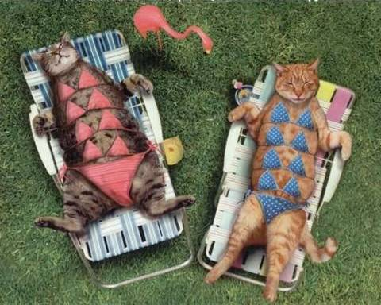
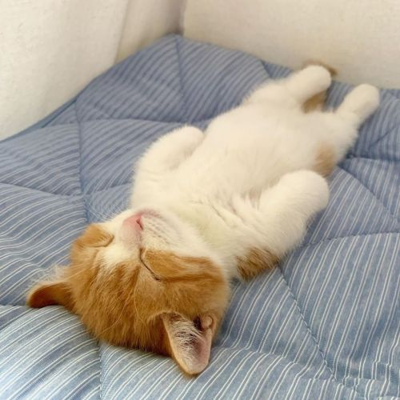
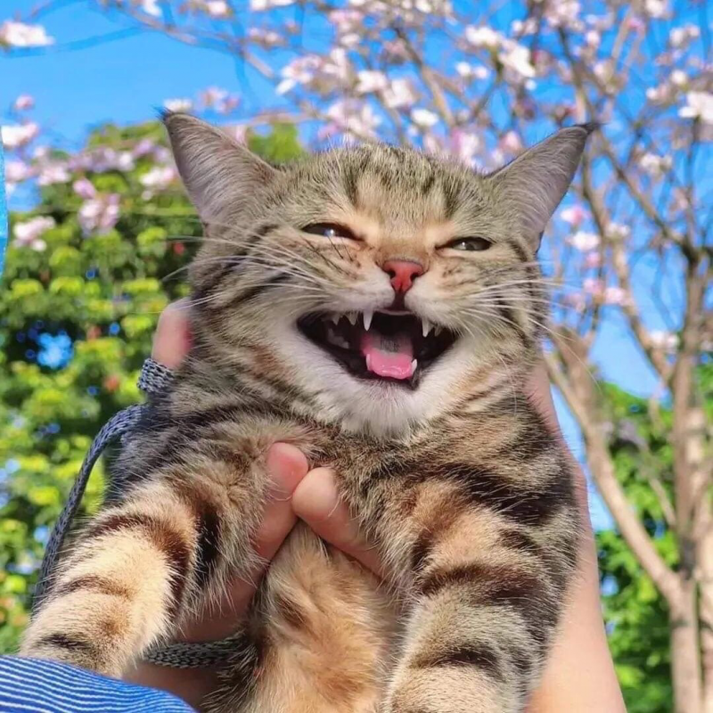

Котики полезны для здоровья
Немного о котиках
Кошка и опорно-двигательный аппарат – какая тут связь? А самая прямая, как выясняется. Ученые выяснили, что звуки на частоте 18–35 Гц помогают заживлять микротравмы и улучшают подвижность мышц и суставов. Коты, между тем, мурлыкают на частотах от 20 до 140 Гц, так что самый очаровательный из кошачьих звуков – это не просто милота, а самое настоящее лекарство. А еще наши любимцы оказывают положительное влияние на сердечно-сосудистую систему, и делают это самим фактом своего присутствия в нашей жизни. Все просто: лицезрение грациозных движений кошки, восхитительные тактильные ощущения при поглаживании мягкой шерстки, ласкающее слух мурчание – все это помогает бороться со стрессами, которые, как известно, сказываются на состоянии нашего сердца.Многократно подтверждено, что владельцы котов куда меньше подвержены проблемам с сердцем, чем те, у кого котиков нет.

Один дома
Что котики делают дома?
Общеизвестный факт: кошки – большие любители поспать. Да что там любители – в этом деле они самые настоящие профессионалы! Проспать 18 часов в сутки? Легко! Но это ни в коем случае не лень и не отсутствие фантазии. Такое поведение продиктовано инстинктами, которые развивались у кошачьих на протяжении тысячелетий: чем лучше зверь отдохнет, тем успешнее будет его охота. Так что все серьезно, а вы думали, кошки спят оттого, что ленивы и не знают, чем бы себя развлечь? Ничуть не бывало: только вы за дверь – ваш кот тут же начинает готовиться к предстоящей охоте. То есть, укладывается поспать.

Кошачье счастье
Счастливые котики :з
Вы думаете, кошки любят сидеть на подоконнике исключительно для того, чтобы порадовать нас красотой этой картинки? Ну вообще-то да, потому что «кошка на окошке» – это даже не мем, а нечто абсолютно легендарное. Однако сидя перед стеклом, котики преследуют немного другую цель: они смотрят на мир. Потому что мир, он интересный, а за окном столько всего происходит! Шагают люди, снуют автомобили, птички порхают, а то и, глядишь, пробежит соседский кот. Ну просто масса впечатлений, жить без которых котики просто не могут, и если лишить их этой возможности, они станут капризничать и даже, может быть, пакостить. Не хотите сюрпризов в тапках – не ограничивайте вашей кошке доступ к окошку!